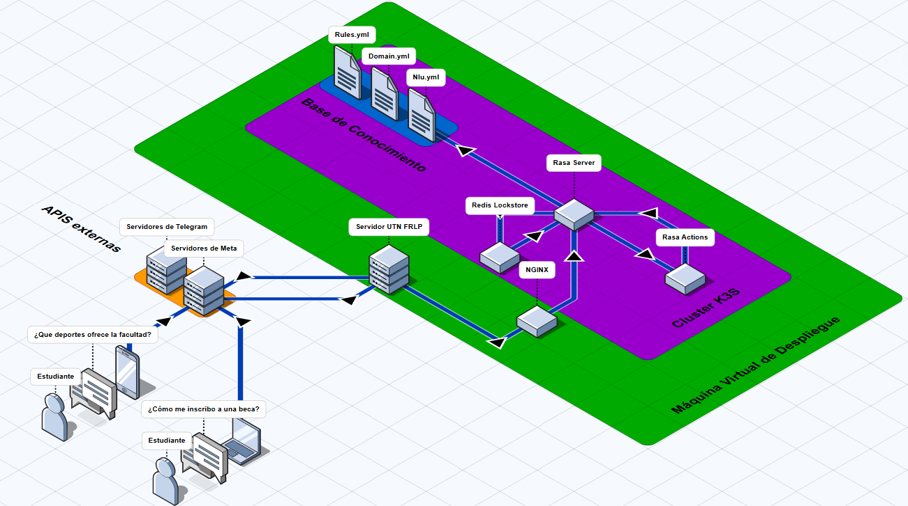

Asistente virtual inteligente para atender consultas de la Secretaría de Asuntos Universitarios de la UTN FRLP
Nombre del proyecto: Chatbot SAU - Asistente Virtual UTN FRLP
Descripción: Asistente virtual basado en IA para responder consultas frecuentes de estudiantes sobre servicios, procesos administrativos y eventos de la Secretaría de Asuntos Universitarios.
Tipo: Proyecto Institucional (Secretaría de Asuntos Universitarios UTN FRLP)
Rol: Desarrollador Full-Stack
Fecha: Octubre - Diciembre 2024
Tecnologías Usadas: Python, Rasa, Docker, K3s, Redis, HTML, CSS, JavaScript, Telegram Bot API, WhatsApp Business API
Impacto: Reducción de consultas presenciales, atención 24/7, mejora en experiencia del usuario
Probar bot Ver códigoLa Secretaría de Asuntos Universitarios (SAU) de la UTN FRLP enfrentaba un problema significativo: miles de estudiantes realizaban consultas repetitivas sobre procesos administrativos, calendarios, servicios disponibles y trámites. Esta demanda generaba sobrecarga en el personal, largas filas de espera y respuestas inconsistentes.
El desafío fue crear una solución que permitiera atender automáticamente al 70-80% de las consultas frecuentes, liberando al personal para tareas más estratégicas y mejorando la experiencia del estudiante con respuestas inmediatas y disponibles 24/7.
Implementé un chatbot inteligente basado en IA que combinaba:
Desarrollé una plataforma de chatbot multifuncional que:
El resultado fue una reducción del 65-75% en consultas presenciales durante su primer mes de operación, permitiendo al personal enfocarse en casos especiales y mejorando significativamente la satisfacción de estudiantes.
Procesamiento de lenguaje natural en español con capacidad de entender variaciones y sinónimos en las consultas.
Sistema estructurado con 60 preguntas frecuentes organizadas en 6 áreas temáticas de la SAU.
El chatbot mantiene el contexto, permitiendo preguntas de seguimiento e interacciones naturales.
Cliente web conectado vía WebSocket al servidor Rasa para una comunicación en tiempo real sin latencia.
Bot disponible en Telegram para acceso multiplataforma y notificaciones directas al estudiante.
Conector custom para WhatsApp Business API con soporte para botones y listas interactivas.
Orquestación ligera con Kubernetes (K3s) y Docker para garantizar alta disponibilidad y escalabilidad.
Video demostrativo del chatbot en acción
Reducción de consultas presenciales
Tiempo promedio de respuesta
Disponibilidad del servicio
